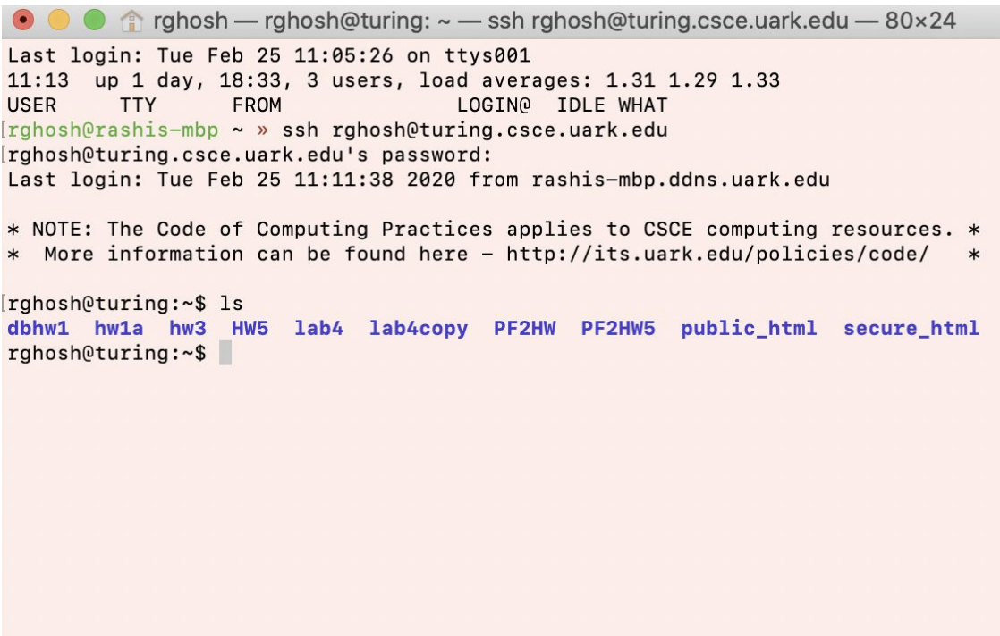

video walkthrough:
the following provides a visual walkthrough. steps detailed after is basically the same thing!
steps to use
1. depending on your OS, you will use one of the following:
2. now to ssh onto Turing, type in the following command:
ssh YOURuarkID@turing.csce.uark.edu
3. hit enter, & you will be prompted for your uark password. you won't see it as you enter it, but it's registering it!
4. hit enter; it might ask if you want to continue, type yes
5. and you're in! use linux commands to navigate the virtual environment. if you need refreshers, click here
☆ below is an example of my turing environment:
